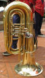
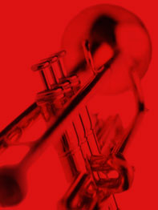

koperblazers
Klankproductie
Als we de koperblaasinstrumenten in het algemeen bekijken, zien we 3 elementen die steeds terugkomen: Om klank te produceren, heeft men nood aan luchttrillingen. De koperblazer perst lucht in het mondstuk terwijl hij zijn lippen doet trillen. Zo ontstaan luchttrillingen. De luchttrillingen planten zich voort in de klankbuizen en worden verpreid in de klankbeker. De hoogte van de toon hangt af van de lipspanning en de lengte van de buizen. Door het wisselen van de lipspanning verkrijgt men een reeks natuurtonen.
Mondstukken
Een hoorn heeft een trechtervormig mondstuk, in tegenstelling tot trompet, trombone en tuba. Die bezitten een ketelvormig mondstuk. Het mondstuk is bijna het belangrijkste onderdeel van het instrument. De bouw en de vorm van het mondstuk variëren van muzikant tot muzikant en moeten aangepast zijn aan de anatomie van de lip van de speler. De een kan bijvoorbeeld een betere klank produceren op een mondstuk, terwijl de andere er niet kan op spelen.
Mechaniek
Zoals eerder gezegd verlaagd de klank door het verlengen van de buislengte en verhoogd de klank door het verkorten van de buislengte. Dit verlengen gebeurt bij de trompet, bugel, tuba, euphonium, bastuba, ventieltrombone met het indrukken van ventielen (pistons) die de lucht omleiden via een andere buis. Als men bij de trompet het eerste ventiel induwt, verlaagt de natuurtoon die men dmv een bepaalde lipspanning creëert met 1 toon. Als men bij een trompet het tweede ventiel induwt, verlaagt de natuurtoon die men dmv een bepaalde lipspanning creëert met 1/2 toon. Als men bij een trompet het derde ventiel induwt, verlaagt de natuurtoon die men dmv een bepaalde lipspanning creëert met 1 1/2 toon. Bij de trombone maakt men gebruik van een schuif waardoor men de volledige lengte van de buis kan vergroten of verkleinen. Het verlagen is weer gebaseerd op de natuurtonen.
Het gebruik van de koperinstrumenten
De kopers worden vooral gebruikt in Harmonieën, Fanfares en Brassbands waar ze dikwijls een solistische functie uitoefenen. Daarnaast gebruikt men de kopers vaak in symfonische orkesten en kamerorkesten. De hoorn speelt in het symfonische orkest bijvoorbeeld een heel belangrijke rol en geeft een belangrijke tint aan de klankkleur van het symfonieorkest. Het leuke aan koperinstrumenten is dat je vrij gemakkelijk kan overstappen van het ene naar het ander instrument. Neem nu bijvoorbeeld een trompettist, deze kan gemakkelijk tegelijk een flugelhornist en een cornettist zijn. Dezelfde rim-en cupdiepte voor de mondstukken zijn wel vereist! Het is ook wenselijk om op een gespecialiseerd mondstuk te spelen dat hoort bij het instrument, speel bijvoorbeeld geen flugel met een aangepast trompetmondstuk.
Het klokhuis: Koperblazers
Educatief filmpje van het TV programma Het Klokhuis.